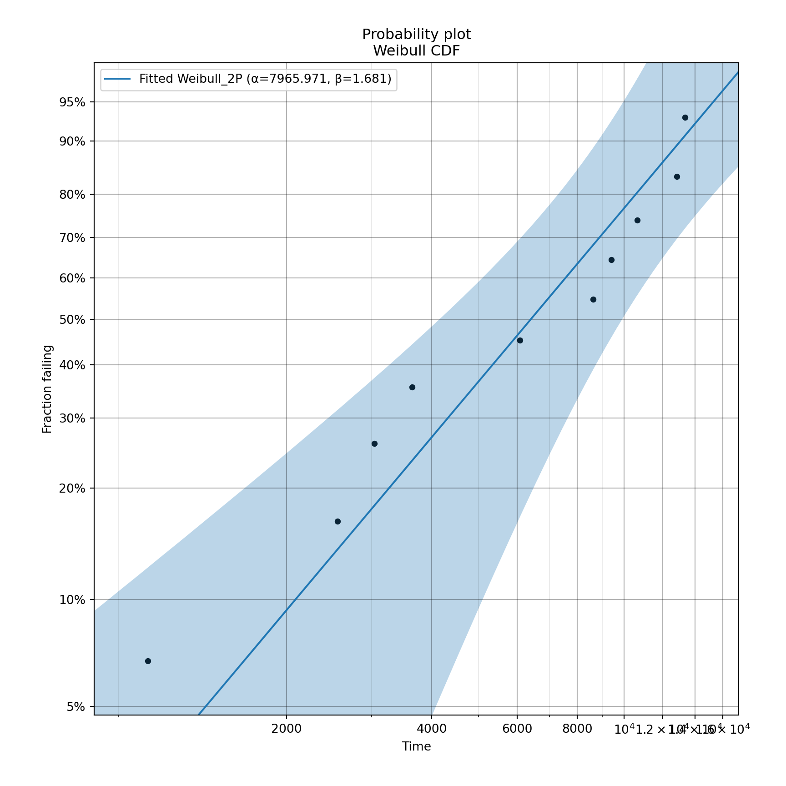
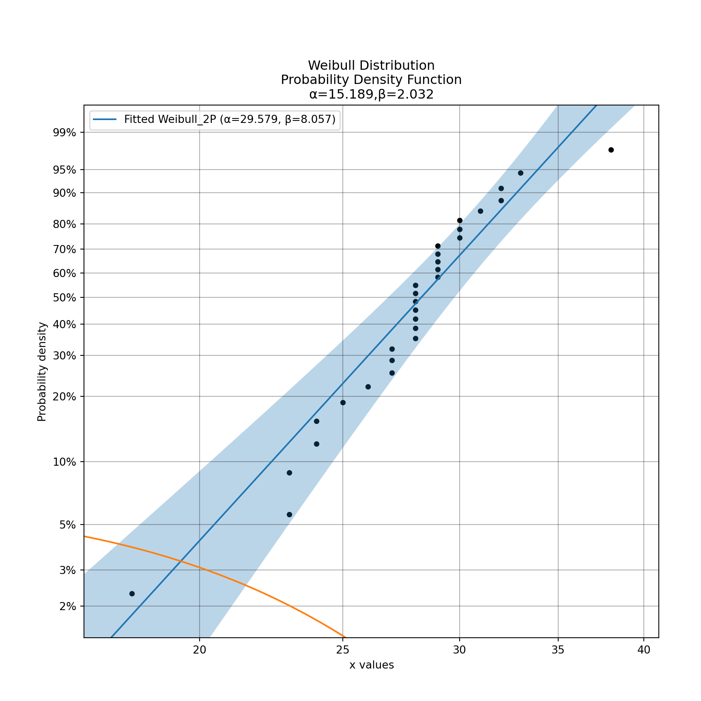

library(survival)
library(tidyverse)
library(plotly)1 パッケージの読み込み
2 データの読み込み
ライフのデータ
dsu01<-read_csv("
life
28
30
32
30
25
27
24
23
29
29
29
31
38
33
32
29
30
18
28
28
24
23
28
29
27
26
28
28
28
27
",show_col_types = FALSE
)
dsu11<-count(dsu01,life) |>
mutate(n=n/sum(n))
plot_ly(x=dsu11$life,y=dsu11$n,type='bar')3 ワイブル
3.1 確率密度関数
\[ f(t)=\frac{m}{\eta}\left(\frac{t}{\eta}\right)^{m-1}e^{-\left(\frac{t}{\eta}\right)^m} \]
weibull_d<-function(m,t,eta){
k<-(m/eta)*(t/eta)^(m-1)*exp(-1*((t/eta)^m))
return(k)}\(m=2\), \(\eta=15\)の場合
m1<-2
eta1<-15
plot(weibull_d(m1,c(1:35),eta1))
3.2 ワイブル分布に従う乱数
i<-rweibull(1000,shape = m1,scale = eta1)
hist(i)
データからワイブルのパラメーターを算出する方法：survregを使う。
t<-survreg(Surv(dsu01$life)~1, dist="weibull")survregの結果は、上述の確率密度関数のパラメーターとして使うには換算する必要がある。
\(m\)
1/t$scale[1] 8.057331\(\eta\)
exp(unname(t$coefficients))[1] 29.578964 R version
R.version.string[1] "R version 4.2.2 (2022-10-31)"5 Python
from reliability.Fitters import Fit_Weibull_2P
import matplotlib.pyplot as plt
fail_times = [
9402.7,
6082.4,
13367.2,
10644.6,
8632.0,
3043.4,
12860.2,
1034.5,
2550.9,
3637.1
]
wb = Fit_Weibull_2P(failures=fail_times)[1m[23m[4m[49m[39mResults from Fit_Weibull_2P (95% CI):[0m
Analysis method: Maximum Likelihood Estimation (MLE)
Optimizer: TNC
Failures / Right censored: 10/0 (0% right censored)
Parameter Point Estimate Standard Error Lower CI Upper CI
Alpha 7965.97 1573.53 5408.78 11732.2
Beta 1.68128 0.444137 1.0018 2.82162
Goodness of fit Value
Log-likelihood -97.1296
AICc 199.973
BIC 198.864
AD 1.5487 plt.show()
from reliability.Distributions import Weibull_Distribution
from reliability.Fitters import Fit_Weibull_3P
from reliability.Other_functions import make_right_censored_data, histogram
import matplotlib.pyplot as plt
a = 30
b = 2
g = 20
threshold=55
dist = Weibull_Distribution(alpha=a, beta=b, gamma=g) # generate a weibull distribution
raw_data = dist.random_samples(500, seed=2) # create some data from the distribution
data = make_right_censored_data(raw_data,threshold=threshold) #right censor some of the data
print('There are', len(data.right_censored), 'right censored items.')There are 118 right censored items.wbf = Fit_Weibull_3P(failures=data.failures, right_censored=data.right_censored, show_probability_plot=False, print_results=False) # fit the Weibull_3P distribution
print('Fit_Weibull_3P parameters:\nAlpha:', wbf.alpha, '\nBeta:', wbf.beta, '\nGamma', wbf.gamma)Fit_Weibull_3P parameters:
Alpha: 28.874744956093892
Beta: 2.029495367281646
Gamma 20.38395851616883histogram(raw_data,white_above=threshold) # generates the histogram using optimal bin width and shades the censored part as white
dist.PDF(label='True Distribution') # plots the true distribution's PDFarray([0.00000000e+00, 0.00000000e+00, 6.66616666e-04, 1.49382607e-03,
2.31965387e-03, 3.14333731e-03, 3.96411691e-03, 4.78123770e-03,
5.59395029e-03, 6.40151210e-03, 7.20318844e-03, 7.99825363e-03,
8.78599213e-03, 9.56569954e-03, 1.03366837e-02, 1.10982658e-02,
1.18497811e-02, 1.25905803e-02, 1.33200300e-02, 1.40375141e-02,
1.47424341e-02, 1.54342105e-02, 1.61122833e-02, 1.67761126e-02,
1.74251796e-02, 1.80589870e-02, 1.86770599e-02, 1.92789461e-02,
1.98642167e-02, 2.04324668e-02, 2.09833155e-02, 2.15164068e-02,
2.20314094e-02, 2.25280173e-02, 2.30059501e-02, 2.34649530e-02,
2.39047969e-02, 2.43252787e-02, 2.47262211e-02, 2.51074729e-02,
2.54689087e-02, 2.58104287e-02, 2.61319588e-02, 2.64334504e-02,
2.67148801e-02, 2.69762491e-02, 2.72175834e-02, 2.74389331e-02,
2.76403723e-02, 2.78219982e-02, 2.79839310e-02, 2.81263131e-02,
2.82493090e-02, 2.83531041e-02, 2.84379046e-02, 2.85039366e-02,
2.85514456e-02, 2.85806957e-02, 2.85919688e-02, 2.85855640e-02,
2.85617970e-02, 2.85209990e-02, 2.84635160e-02, 2.83897082e-02,
2.82999489e-02, 2.81946241e-02, 2.80741312e-02, 2.79388784e-02,
2.77892840e-02, 2.76257751e-02, 2.74487875e-02, 2.72587640e-02,
2.70561544e-02, 2.68414140e-02, 2.66150032e-02, 2.63773865e-02,
2.61290318e-02, 2.58704095e-02, 2.56019918e-02, 2.53242521e-02,
2.50376638e-02, 2.47427001e-02, 2.44398329e-02, 2.41295323e-02,
2.38122660e-02, 2.34884982e-02, 2.31586898e-02, 2.28232968e-02,
2.24827705e-02, 2.21375568e-02, 2.17880952e-02, 2.14348187e-02,
2.10781535e-02, 2.07185180e-02, 2.03563227e-02, 1.99919699e-02,
1.96258531e-02, 1.92583567e-02, 1.88898556e-02, 1.85207152e-02,
1.81512908e-02, 1.77819276e-02, 1.74129602e-02, 1.70447127e-02,
1.66774984e-02, 1.63116196e-02, 1.59473677e-02, 1.55850226e-02,
1.52248534e-02, 1.48671177e-02, 1.45120617e-02, 1.41599206e-02,
1.38109180e-02, 1.34652664e-02, 1.31231671e-02, 1.27848103e-02,
1.24503750e-02, 1.21200294e-02, 1.17939308e-02, 1.14722261e-02,
1.11550513e-02, 1.08425324e-02, 1.05347849e-02, 1.02319146e-02,
9.93401738e-03, 9.64117967e-03, 9.35347847e-03, 9.07098174e-03,
8.79374853e-03, 8.52182930e-03, 8.25526614e-03, 7.99409305e-03,
7.73833617e-03, 7.48801406e-03, 7.24313800e-03, 7.00371222e-03,
6.76973419e-03, 6.54119492e-03, 6.31807920e-03, 6.10036589e-03,
5.88802820e-03, 5.68103396e-03, 5.47934592e-03, 5.28292197e-03,
5.09171543e-03, 4.90567536e-03, 4.72474672e-03, 4.54887075e-03,
4.37798513e-03, 4.21202427e-03, 4.05091953e-03, 3.89459949e-03,
3.74299017e-03, 3.59601522e-03, 3.45359621e-03, 3.31565280e-03,
3.18210293e-03, 3.05286308e-03, 2.92784842e-03, 2.80697300e-03,
2.69014997e-03, 2.57729170e-03, 2.46831000e-03, 2.36311623e-03,
2.26162149e-03, 2.16373678e-03, 2.06937308e-03, 1.97844153e-03,
1.89085357e-03, 1.80652101e-03, 1.72535616e-03, 1.64727197e-03,
1.57218210e-03, 1.50000100e-03, 1.43064402e-03, 1.43064402e-03,
1.26823159e-03, 1.11982024e-03, 9.84760211e-04, 8.62369364e-04,
7.51940507e-04, 6.52748831e-04, 5.64059222e-04, 4.85133371e-04,
4.15236573e-04, 3.53644133e-04, 2.99647272e-04, 2.52558481e-04,
2.11716241e-04, 1.76489082e-04, 1.46278940e-04, 1.20523799e-04,
9.86996169e-05, 8.03215666e-05, 6.49445999e-05, 5.21633981e-05,
4.16117551e-05, 3.29614580e-05, 2.59207377e-05, 2.02323617e-05])wbf.distribution.PDF(label='Fit_Weibull_3P', linestyle='--') # plots to PDF of the fitted Weibull_3Parray([0.00000000e+00, 0.00000000e+00, 6.57310834e-04, 1.44368039e-03,
2.24199812e-03, 3.04682493e-03, 3.85526563e-03, 4.66532940e-03,
5.47545687e-03, 6.28433031e-03, 7.09078255e-03, 7.89374807e-03,
8.69223454e-03, 9.48530546e-03, 1.02720690e-02, 1.10516709e-02,
1.18232891e-02, 1.25861313e-02, 1.33394321e-02, 1.40824517e-02,
1.48144754e-02, 1.55348127e-02, 1.62427971e-02, 1.69377861e-02,
1.76191613e-02, 1.82863285e-02, 1.89387182e-02, 1.95757853e-02,
2.01970101e-02, 2.08018984e-02, 2.13899813e-02, 2.19608165e-02,
2.25139876e-02, 2.30491051e-02, 2.35658063e-02, 2.40637554e-02,
2.45426440e-02, 2.50021912e-02, 2.54421434e-02, 2.58622745e-02,
2.62623860e-02, 2.66423071e-02, 2.70018942e-02, 2.73410311e-02,
2.76596287e-02, 2.79576250e-02, 2.82349846e-02, 2.84916986e-02,
2.87277839e-02, 2.89432834e-02, 2.91382652e-02, 2.93128220e-02,
2.94670711e-02, 2.96011534e-02, 2.97152330e-02, 2.98094968e-02,
2.98841534e-02, 2.99394329e-02, 2.99755859e-02, 2.99928831e-02,
2.99916140e-02, 2.99720869e-02, 2.99346272e-02, 2.98795775e-02,
2.98072961e-02, 2.97181565e-02, 2.96125465e-02, 2.94908672e-02,
2.93535323e-02, 2.92009671e-02, 2.90336076e-02, 2.88518997e-02,
2.86562983e-02, 2.84472664e-02, 2.82252742e-02, 2.79907981e-02,
2.77443201e-02, 2.74863268e-02, 2.72173083e-02, 2.69377577e-02,
2.66481704e-02, 2.63490426e-02, 2.60408713e-02, 2.57241530e-02,
2.53993830e-02, 2.50670548e-02, 2.47276596e-02, 2.43816849e-02,
2.40296145e-02, 2.36719276e-02, 2.33090981e-02, 2.29415940e-02,
2.25698770e-02, 2.21944018e-02, 2.18156157e-02, 2.14339579e-02,
2.10498592e-02, 2.06637417e-02, 2.02760179e-02, 1.98870910e-02,
1.94973538e-02, 1.91071890e-02, 1.87169687e-02, 1.83270541e-02,
1.79377950e-02, 1.75495302e-02, 1.71625869e-02, 1.67772804e-02,
1.63939145e-02, 1.60127809e-02, 1.56341593e-02, 1.52583174e-02,
1.48855109e-02, 1.45159835e-02, 1.41499665e-02, 1.37876794e-02,
1.34293300e-02, 1.30751137e-02, 1.27252144e-02, 1.23798045e-02,
1.20390446e-02, 1.17030841e-02, 1.13720611e-02, 1.10461026e-02,
1.07253251e-02, 1.04098343e-02, 1.00997253e-02, 9.79508347e-03,
9.49598394e-03, 9.20249235e-03, 8.91466490e-03, 8.63254865e-03,
8.35618185e-03, 8.08559415e-03, 7.82080696e-03, 7.56183367e-03,
7.30867998e-03, 7.06134423e-03, 6.81981762e-03, 6.58408459e-03,
6.35412306e-03, 6.12990477e-03, 5.91139556e-03, 5.69855569e-03,
5.49134008e-03, 5.28969870e-03, 5.09357675e-03, 4.90291504e-03,
4.71765021e-03, 4.53771505e-03, 4.36303874e-03, 4.19354714e-03,
4.02916305e-03, 3.86980644e-03, 3.71539474e-03, 3.56584306e-03,
3.42106444e-03, 3.28097005e-03, 3.14546945e-03, 3.01447077e-03,
2.88788097e-03, 2.76560598e-03, 2.64755091e-03, 2.53362027e-03,
2.42371811e-03, 2.31774820e-03, 2.21561418e-03, 2.11721976e-03,
2.02246880e-03, 1.93126551e-03, 1.84351452e-03, 1.75912106e-03,
1.67799106e-03, 1.60003124e-03, 1.52514923e-03, 1.52514923e-03,
1.35229198e-03, 1.19429430e-03, 1.05047250e-03, 9.20107685e-04,
8.02453664e-04, 6.96744793e-04, 6.02203782e-04, 5.18049274e-04,
4.43503103e-04, 3.77797142e-04, 3.20179620e-04, 2.69920866e-04,
2.26318377e-04, 1.88701189e-04, 1.56433493e-04, 1.28917505e-04,
1.05595569e-04, 8.59515164e-05, 6.95113245e-05, 5.58431025e-05,
4.45564767e-05, 3.53014356e-05, 2.77667121e-05, 2.16777811e-05])plt.title('Fitting comparison for failures and right censored data')
plt.legend()
plt.show()6 ワイブル分布
import numpy as np
import plotly.express as px
def weibull_d(m,t,eta):
k=(m/eta)*(t/eta)**(m-1)*np.exp(-1*((t/eta)**m))
return k
m1=2
eta1=15
t1=np.arange(1,36)
d1=weibull_d(m1,t1,eta1)
fig1=px.scatter(x=t1,y=d1)
fig17 フィット
from reliability.Fitters import Fit_Weibull_2P
dsu02=r.dsu01
life_max=int(max(dsu02['life']))
dsu03=dsu02['life'].values.tolist()
wb2 = Fit_Weibull_2P(failures=dsu03)[1m[23m[4m[49m[39mResults from Fit_Weibull_2P (95% CI):[0m
Analysis method: Maximum Likelihood Estimation (MLE)
Optimizer: TNC
Failures / Right censored: 30/0 (0% right censored)
Parameter Point Estimate Standard Error Lower CI Upper CI
Alpha 29.579 0.709558 28.2204 31.0029
Beta 8.05733 1.02419 6.28047 10.3369
Goodness of fit Value
Log-likelihood -82.1756
AICc 168.796
BIC 171.154
AD 1.48179 print('Fit_Weibull parameters:\n Alpha(scale η):', wb2.alpha, '\nBeta(shape m):', wb2.beta)Fit_Weibull parameters:
Alpha(scale η): 29.578959363748456
Beta(shape m): 8.057329129027952import plotly.graph_objects as go
tt="Scale parameter η: "+str(round(wb2.alpha,3))+", Shape parameter m: "+str(round(wb2.beta,3))
ts=np.arange(1,life_max+1)
ta=r.dsu11
fig0201=go.Bar(
x=ta['life'], y=ta["n"],name='Actual',
marker={"color": "#99cc66"}
)
fig0202=go.Scatter(
x=ts, y=weibull_d(wb2.beta,ts,wb2.alpha), name='Weibull fit',
line={"color": "#cc6600","width":2},
)
fig04=go.Figure(data=[fig0201,fig0202])
fig04=fig04.update_layout(annotations=[
go.layout.Annotation(
xref="paper",
yref="paper",
x=0.03,
y=0.95,
showarrow=False,
text=tt
)
])
fig04from reliability.Distributions import Weibull_Distribution
import matplotlib.pyplot as pltdsu03=Weibull_Distribution(alpha=15.189, beta=2.032018)
dsu03.PDF(label='dsu01')array([0.00000000e+00, 1.24409191e-03, 2.71913749e-03, 4.21858530e-03,
5.73161070e-03, 7.25248344e-03, 8.77729406e-03, 1.03030038e-02,
1.18270616e-02, 1.33472202e-02, 1.48614369e-02, 1.63678159e-02,
1.78645724e-02, 1.93500106e-02, 2.08225081e-02, 2.22805059e-02,
2.37225022e-02, 2.51470469e-02, 2.65527394e-02, 2.79382260e-02,
2.93021990e-02, 3.06433958e-02, 3.19605989e-02, 3.32526356e-02,
3.45183788e-02, 3.57567467e-02, 3.69667037e-02, 3.81472606e-02,
3.92974759e-02, 4.04164554e-02, 4.15033534e-02, 4.25573732e-02,
4.35777674e-02, 4.45638383e-02, 4.55149387e-02, 4.64304719e-02,
4.73098920e-02, 4.81527042e-02, 4.89584649e-02, 4.97267818e-02,
5.04573137e-02, 5.11497706e-02, 5.18039134e-02, 5.24195537e-02,
5.29965532e-02, 5.35348238e-02, 5.40343264e-02, 5.44950710e-02,
5.49171155e-02, 5.53005653e-02, 5.56455721e-02, 5.59523337e-02,
5.62210921e-02, 5.64521334e-02, 5.66457860e-02, 5.68024200e-02,
5.69224457e-02, 5.70063122e-02, 5.70545065e-02, 5.70675519e-02,
5.70460065e-02, 5.69904622e-02, 5.69015425e-02, 5.67799016e-02,
5.66262229e-02, 5.64412167e-02, 5.62256196e-02, 5.59801919e-02,
5.57057170e-02, 5.54029989e-02, 5.50728610e-02, 5.47161442e-02,
5.43337058e-02, 5.39264170e-02, 5.34951621e-02, 5.30408363e-02,
5.25643444e-02, 5.20665991e-02, 5.15485193e-02, 5.10110289e-02,
5.04550549e-02, 4.98815261e-02, 4.92913714e-02, 4.86855189e-02,
4.80648937e-02, 4.74304175e-02, 4.67830063e-02, 4.61235698e-02,
4.54530099e-02, 4.47722195e-02, 4.40820815e-02, 4.33834674e-02,
4.26772368e-02, 4.19642356e-02, 4.12452959e-02, 4.05212344e-02,
3.97928520e-02, 3.90609328e-02, 3.83262436e-02, 3.75895327e-02,
3.68515298e-02, 3.61129452e-02, 3.53744693e-02, 3.46367720e-02,
3.39005023e-02, 3.31662883e-02, 3.24347363e-02, 3.17064309e-02,
3.09819347e-02, 3.02617879e-02, 2.95465086e-02, 2.88365923e-02,
2.81325121e-02, 2.74347185e-02, 2.67436398e-02, 2.60596818e-02,
2.53832280e-02, 2.47146398e-02, 2.40542570e-02, 2.34023973e-02,
2.27593574e-02, 2.21254126e-02, 2.15008175e-02, 2.08858064e-02,
2.02805931e-02, 1.96853721e-02, 1.91003185e-02, 1.85255884e-02,
1.79613199e-02, 1.74076327e-02, 1.68646294e-02, 1.63323956e-02,
1.58110005e-02, 1.53004972e-02, 1.48009239e-02, 1.43123035e-02,
1.38346449e-02, 1.33679432e-02, 1.29121805e-02, 1.24673259e-02,
1.20333369e-02, 1.16101593e-02, 1.11977278e-02, 1.07959671e-02,
1.04047919e-02, 1.00241073e-02, 9.65381017e-03, 9.29378880e-03,
8.94392393e-03, 8.60408907e-03, 8.27415107e-03, 7.95397061e-03,
7.64340266e-03, 7.34229698e-03, 7.05049857e-03, 6.76784815e-03,
6.49418255e-03, 6.22933517e-03, 5.97313638e-03, 5.72541394e-03,
5.48599334e-03, 5.25469824e-03, 5.03135075e-03, 4.81577184e-03,
4.60778162e-03, 4.40719968e-03, 4.21384540e-03, 4.02753821e-03,
3.84809788e-03, 3.67534477e-03, 3.50910008e-03, 3.34918609e-03,
3.19542634e-03, 3.04764589e-03, 2.90567147e-03, 2.90567147e-03,
2.57639419e-03, 2.27541634e-03, 2.00143676e-03, 1.75308719e-03,
1.52894723e-03, 1.32755932e-03, 1.14744362e-03, 9.87112423e-04,
8.45084009e-04, 7.19895670e-04, 6.10115770e-04, 5.14354681e-04,
4.31274452e-04, 3.59597132e-04, 2.98111685e-04, 2.45679445e-04,
2.01238140e-04, 1.63804496e-04, 1.32475482e-04, 1.06428308e-04,
8.49192467e-05, 6.72814483e-05, 5.29218593e-05, 4.13174142e-05])plt.show()
8 参考サイト
Python package reliability - Fitting a specific distribution to data